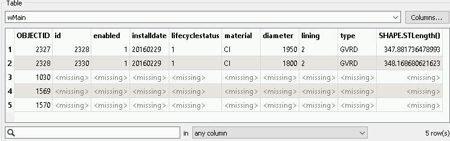
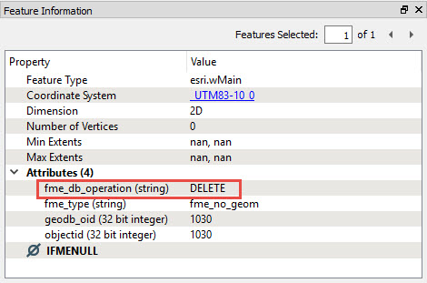
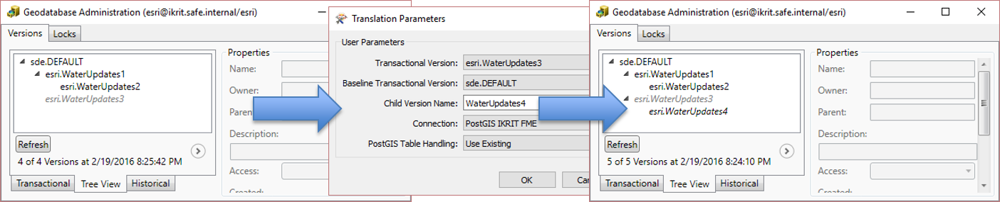
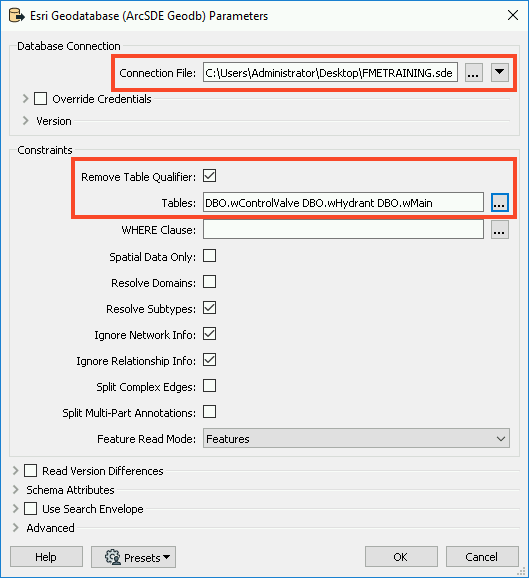

After completing this lesson, you’ll be able to:
This lesson’s exercise uses the Esri Geodatabase (ArcSDE Geodb) reader/writer, which requires a licensed version of ArcGIS. Additionally, you will need an SDE connection file. If you are taking a Safe Software training course, we will provide this file to you; otherwise, you need to provide your own.
For more information on required ArcGIS license levels, please see Required ArcGIS License Types for FME Geodatabase Formats.
FME can extract differences (or deltas) from an Enterprise Geodatabase (ArcSDE). The critical functionality is:
This tutorial focuses on extracting differences from a transactional versioned Geodatabase. However, the principals are the same for reading differences from historical archives.
You can replicate or synchronize your geodatabase with other databases in your organization by extracting differences from a geodatabase.
A versioned geodatabase will often have a hierarchical structure as shown below:

In ArcGIS Pro, this will look like this:

The Esri Geodatabase (ArcSDE Geodb) Reader Parameters dialog has several parameters which control the different data you can extract from versions (see the FME User Documentation for more details). Referring to the image of the Geodatabase reader parameters below:

These parameters are also available in FME Data Inspector if you want to visualize the deltas in your geodatabase.
FME Workspaces for extracting differences are surprisingly straightforward. This example converts water utility data from Geodatabase (ArcSDE) to PostGIS. The crucial part of the workflow is the published parameters:

In this example, FME reads the Transactional Version DBO.WaterUpdates3 and compares it against the Baseline Transactional Version DBO.DEFAULT.
The following three images from Visual Preview illustrate the state of the Esri geodatabase versions:
 Image 1: Original data - DBO.DEFAULTS version
Image 1: Original data - DBO.DEFAULTS version
 Image 2: Edited water mains data - DBO.WaterUpdates3 version
Image 2: Edited water mains data - DBO.WaterUpdates3 version
 Image 3: Differences between DBO.WaterUpdates3 and DBO.DEFAULTS versions
Image 3: Differences between DBO.WaterUpdates3 and DBO.DEFAULTS versions
You don’t see the deleted objects in the images because they have no geometry. However, you can inspect them in Visual Preview’s Table and Feature Information windows:


Notice that the fme_db_operation attribute’s value is DELETE.
When you extract differences from geodatabase transactional versions or archives, FME automatically sets the fme_db_operation attribute to INSERT, UPDATE or DELETE. Most FME database writers support fme_db_operation for incremental updates to the database. This attribute makes pushing the deltas into the target database straightforward.
The geodatabase reader has a Child Version parameter that you can use to create the next version for editing. In this example, we’re reading the differences between DBO.WaterUpates3 and the DBO.DEFAULT versions. If we set the child version to be WaterUpdates4, FME will create the new version, which will be your starting point for the next round of edits in your geodatabase. This parameter allows you to set up a data replication workflow: extracting differences, creating a new version, undertaking edits in the new version, generating the next round of differences, etc.

Working with historical archives is very similar to the transaction version described above. The geodatabase reader parameters dialog has several parameters (marked in the parameters dialog image above) which control the differences you can extract from archives:
When extracting differences from a versioned geodatabase, FME uses the concept of a common ancestor, so the common ancestor of the two versions you’re working with generates all differences. For this reason, it’s not a good idea to extract differences between different branches in your versioned geodatabase, as shown below:

You’re likely to get unpredictable results!
The following instructions will walk you through creating a workspace that reads your ArcSDE versions.
1. Add an Esri Geodatabase (ArcSDE Geodb) Reader
Open FME Workbench (2021.1 or later) and start a new workspace. Add an Esri Geodatabase (ArcSDE Geodb) reader to the canvas and open the Parameters.
In the Parameters, browse to the FMETRAINING.sde Connection File. Next, enable Remove Table Qualifier and select all of the Tables by clicking on the ellipsis and selecting DBO.

Next, enable Read Version Differences. This will allow us to set a baseline (either a transactional version or historical time if using archiving) which will be used as the ‘parent’ of the comparison version.
In order for the ‘child’ version to be compared against the baseline, we need to ensure we set the version on the reader. Otherwise, it will default to the version used in the SDE connection file. Most often this is the DEFAULT version. Click on the ellipsis next to Baseline Transactional Version and select dbo.DEFAULT. Click OK twice to add the reader.

2. Add Inspectors
Now that we’ve added the data, we will want to inspect our versions using Visual Preview. Select all three reader feature types by clicking and dragging a box around them. Next, right-click on any one of the three and select Connect Inspectors.
3. Create User Parameters
When we run the workspace, we want to select which versions to compare, for that we will use user parameters to quickly switch between versions. In the Navigator window, right-click on User Parameters and select Manage User Parameters. We will create two parameters, with the following setup:
Parameter 1:
Parameter 2:

4. Assign User Parameters
Now that we’ve created our user parameters, we need to assign them to the reader parameters. In the Navigator, expand the [GEODATABASE_SDE] reader and then expand Parameters, and expand Advanced. Right-click on Transactional Version and select Link to User Parameter.
In the Set to User Parameter dialog, select TransactionalVersion.
Repeat this step with Baseline Transactional Version, and set it to the BaselineTransactionalVersion parameter.
We need to create one more user parameter, but we can do that from the Navigator panel. Right-click on Child Version Name and select Create User Parameter. In the Add/Edit User Parameter dialog, click OK as we can accept the default parameters.
You should now have three parameters linked for the GEODATABASE_SDE reader.
5. Save and Run Workspace
Save the workspace, then run with Prompt for User Parameters enabled. Now each time you run the workspace, you can select which versions you wish to compare.
If you want to run the examples described above, then you can use the following steps to load the sample data into your own Geodatabase (ArcSDE) environment. Use the provided archive create-differences.zip.
Use the version hierarchy shown in the image: